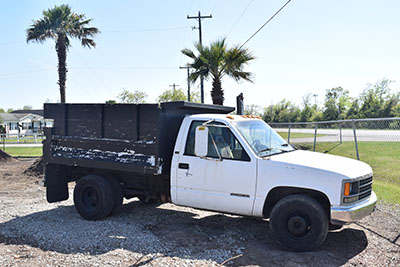

Serving all mulch, soil, and sand needs for the Southeast Houston area, Top Mulch Garden Center is a Texas family owned company that is dedicated to excellence.
Our mission is simply to provide quick and affordable service to our customer.
Located in Alvin Texas, Top Mulch Garden Center serves all neighboring cities including Clear Lake, Friendswood, Pearland, League City, Manvel, Liverpool, Angleton, and many more.
Same day delivery is available for many neighboring areas, and can be provided free of charge for orders greater than six (6) yards.
Give us a call or send us an email for free estimates.
Hours:
Mon-Fri: 7:00 am to 7:00 pm
Sat: 7:00 am to 5:00 pm
